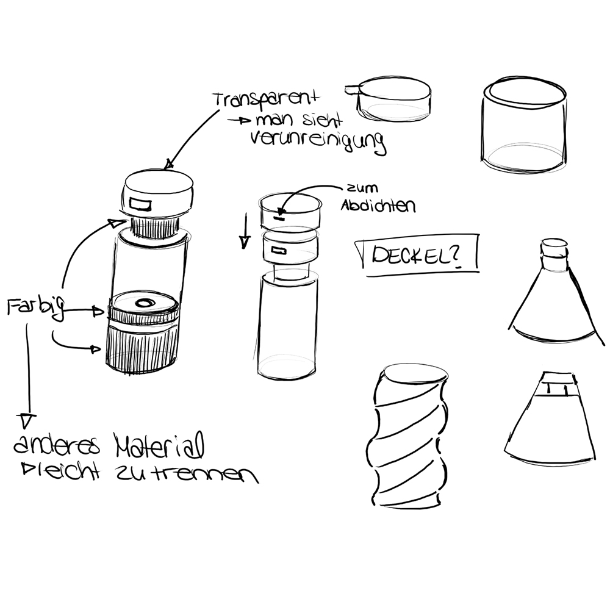
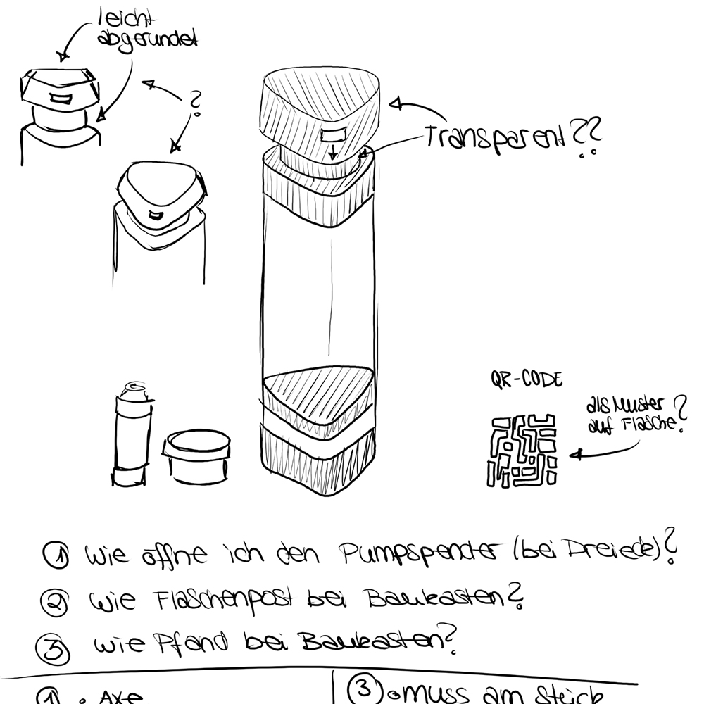
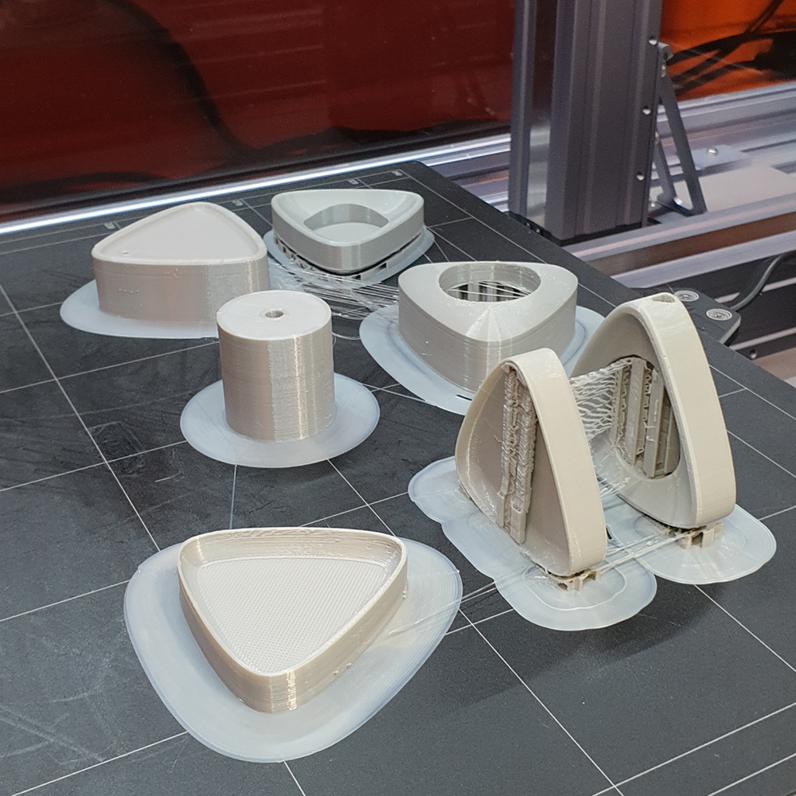

REFRESH

Verpackung
Der Verbrauch von Bodycare-Produkten steigt deutlich an und somit auch die Belastung des Verpackungsmüll. Die ReFresh-Flasche ist so konstruiert, dass sie deckend alle Anforderungen des hier erarbeiteten Systems erfüllt. Erstellt wurde eine Shampoo-Flasche als Pumpspender. Dieser Pumpspender funktioniert über Vakuum. Die Transparenz der Flasche, soll die Transparenz des Systems widerspiegeln und zudem auch die Performanz des Anmischens des Shampoos zur Schau stellen. Die einzelnen Elemente der Verpackungen sind hauptsächlich gesteckt oder nur geschraubt. Hierdurch wird die Reinigung der Verpackung vereinfacht. Aber auch das Austauschen von beschädigten Elementen oder das sortenreine Recyceln der genutzten Materialien ist hierdurch gegeben.
System
Das entwickelte System ist ein komplett geschlossenes System, welches trotzdem mehrere Möglichkeiten für den Konsumenten bietet und sehr viele der Motivationsgründe der Konsumenten für den Kauf eines Shampoos deckt.

Flaschenpost
Das „Flaschenpost“-System soll für jeden Konsumenten leicht verständlich, informativ und transparent sein. Hierfür wird ein QR-Code an der Unterseite der Flasche gedruckt. Wird dieser abgescannt, werden einem unterschiedliche Möglichkeiten geboten. Außerdem bietet es eine Interaktion mit weiteren Konsumenten durch die „Flaschenpost“ und zeigt, was mit der Flasche nach dem Gebrauch passiert
Designsprozess
  